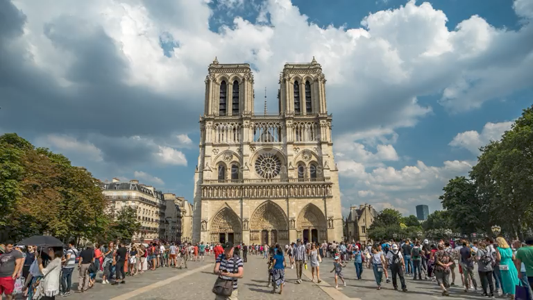
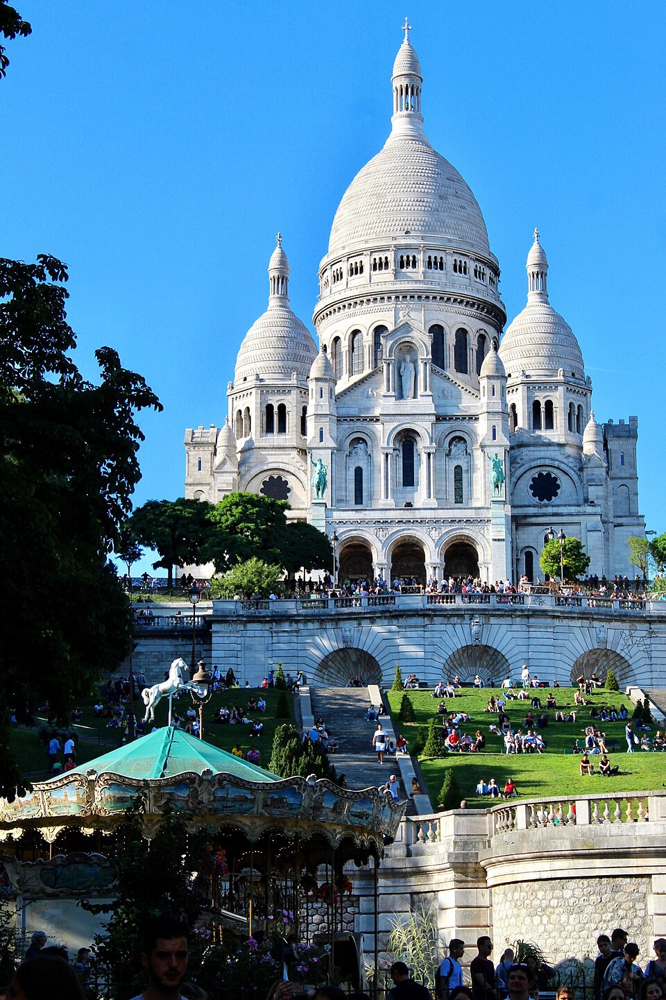

艾菲爾鐵塔
巴黎最著名地標，可以上塔頂睇全市景色。
- 歷史文化
- 為1889年世博會而建，當年部分藝術家反對，後來成為法國象徵。
- 交通
- 地鐵6號線 Bir-Hakeim 站，或 RER C 線 Champ de Mars–Tour Eiffel 站。
- 貼士
- 網上預訂時段門票可以慳返排隊時間。
主頁 ／ 法國・巴黎
藝術、時尚與美食之都
塞納河畔嘅巴黎，有艾菲爾鐵塔、羅浮宮、聖母院同蒙馬特。街角咖啡店同麵包店，本身就係旅程一部分。
巴黎西堤島原有高盧部落巴黎西人聚居，後來羅馬人建城，名為盧泰西亞。
18世紀沙龍文化帶動啟蒙思想，1789年法國大革命由此改寫歐洲歷史。
艾菲爾鐵塔為世博會而建，原本只打算暫時保留，後來成為城市象徵。
揀一個月份，睇吓適唔適合去。
由戴高樂機場搭 RER B 約35分鐘入市區。市內地鐵網絡密集，建議買 Navigo 週票或單次車票；市中心亦好行。
巴黎最著名地標，可以上塔頂睇全市景色。
世界最大博物館之一，珍藏《蒙娜麗莎》同《米羅嘅維納斯》。

位於西堤島嘅哥德式大教堂，以玫瑰窗同飛扶壁聞名。

白色圓頂教堂立於蒙馬特山丘頂，附近係畫家聚集嘅小廣場。